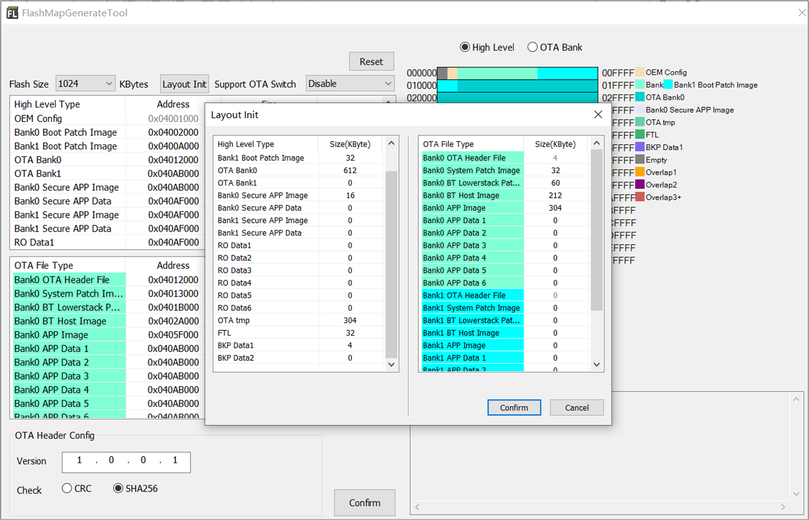
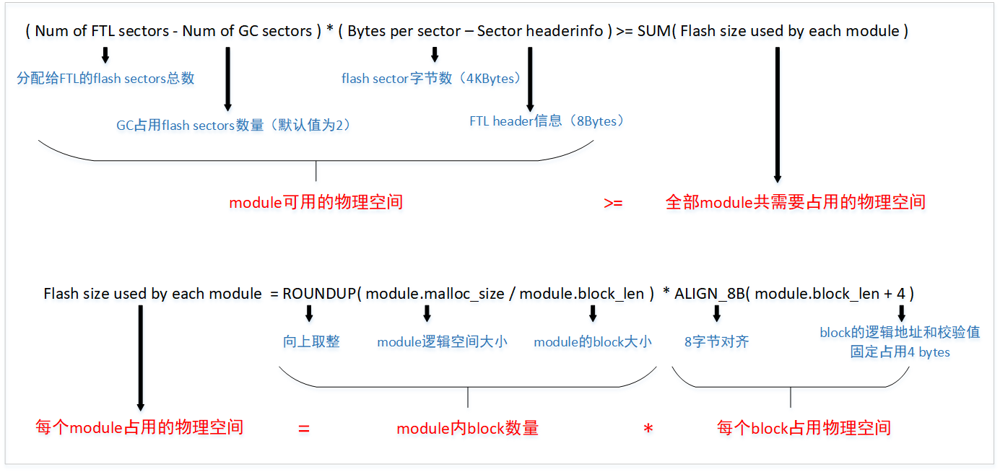

Flash
Flash 作为一种非易失性存储器，与 RAM 不同。RAM 可以直接读写，直接执行代码或存储数据。而 flash 的写入操作只能在空的或已擦除的单元内进行。因此，在执行 flash 写访问之前常常需要先执行擦除访问。
备注
Flash 具有最高 100,000 次的编程次数限制，如果频繁对某个区块擦写，将容易产生坏块。
当用户需要利用 flash 存储数据时，flash 驱动程序的接口并不首推给 APP 使用，更建议使用 FTL 接口。
Flash 布局
RTL87x2G 集成 flexible memory controller（ FMC），支持外挂 SPI Flash。FMC 支持最大的地址映射空间为 64M bytes，对应地址空间 0x04000000~0x07FFFFFF。Flash 详细布局参考：Flash布局。
FTL
FTL（Flash Translation Layer）是基于 flash driver 实现的软件抽象层，用于用户读写 flash 数据。FTL 物理空间的位置可以查看 Flash布局。FTL 的目的是简化对 flash 中数据的修改过程。
如果不使用 FTL，在用户需要修改 flash 上的数据时，需要先擦除 flash。频繁修改 flash 时，会在擦除上浪费大量时间。而 FTL 用逻辑地址代替物理地址来访问 flash，在用户进行数据修改时，原先的数据不会被直接修改，而是将新的数据会写入新的物理地址，并且逻辑地址会指向该物理地址。在这种方式下，可以避免频繁擦除 flash，节约修改数据所需时间。
当 FTL 检测到没有足够的空间写入新记录时，会触发垃圾回收（GC，Garbage Collection）机制，对过期或不再被使用的记录进行擦除和回收。FTL 由于循环使用 flash 空间、均匀分布擦写操作，可以避免某些块过早失效，达到磨损均衡的效果。
目前，FTL 支持 v1 和 v2 版本。v1 版本包含上述功能的完整实现。在 v1 的基础上，v2 版本在最大存储空间和 flash 利用率方面进行了改进，并且支持创建 “module” 划分逻辑空间。
备注
FTL 适用于需要频繁改写的数据，一方面 API 接口更为简单，另一方面有助于延长 flash 使用寿命（磨损均衡）。
如果数据量较大、只读（或偶尔改写）、不需要支持 OTA 升级，推荐使用 flash API 将数据存储在 “APP Defined Section” 区域。
如果数据量较大、只读（或偶尔改写）、需要支持 OTA 升级，推荐将数据存储在 OTA bank 内的 App Data1、App Data2、App Data3、App Data4、App Data5、App Data6 和 secure app data 区域。
FTL v1
SDK v1.2.0 及以前版本默认支持 FTL v1，在后续 SDK 版本如需使用 FTL v1，请参考以下步骤：
打开 SDK 根目录。
拷贝
ftl_v1\ftl.h到bsp\sdk_lib\inc\，替换目标路径下已有ftl.h文件。如果使用 GCC 编译，将
ftl_v1\librtl87x2g_sdk.a拷贝到bsp\sdk_lib\lib\rtl87x2g\gcc\，替换目标路径下已有librtl87x2g_sdk.a文件。如果使用 MDK 编译，将
ftl_v1\rtl87x2g_sdk.lib拷贝到bsp\sdk_lib\lib\rtl87x2g\mdk\，替换目标路径下已有rtl87x2g_sdk.lib文件。重新编译 APP 工程。
FTL v1 空间的功能划分
FTL 空间按照其功能划分为以下两块存储空间，以默认设置的 FTL 物理空间大小为 16K 为例。
BT 存储空间
逻辑地址范围 [0x0000, 0x0D00)，但是这部分空间的大小可通过
otp_config.h参数调整。（当前 SDK 暂时未支持）用于存储 BT 信息，例如设备地址，link key 等。
详细请参考 LE Host。
APP 存储空间
逻辑地址范围 [0x0D00, 0x17F0)。
用于存储 APP 的信息。
可用以下 APIs 读/写 APP 存储数。
uint32_t ftl_save(void *pdata, uint16_t offset, uint16_t size); uint32_t ftl_load(void *pdata, uint16_t offset, uint16_t size);
备注
ftl_save和ftl_load在实现上已对传入的 offset 参数加上 APP 存储空间的偏移 0x0D00，因此，APP 使用这两个 API 时 offset 参数从 0 开始规划即可。
调整 FTL v1 空间的大小
FTL 的物理空间大小是可配置的，通过修改 config 文件的配置参数来调整。操作步骤如下：
首先利用 Flash Map Generate Tool（随 MP Tool 一起发布）来生成
flash map.ini和flash_map.h文件。将
flash_map.h文件拷贝到 APP 工程目录下，例如：sdk\samples\bluetooth\ble_peripheral，这样 APP 编译的时候可以获取正确的加载地址。将第一步生成的
flash map.ini加载到 MP Tool 中生成 config 文件用于烧录，如 修改 flash map 配置文件 示例，调整 FTL 的物理空间至 32K。
{kind=link}

修改 flash map 配置文件
备注
当调整 FTL 物理空间大小时，APP 可使用的最大逻辑空间也会对应改变。假设实际 FTL 的物理空间大小设置的 mK（m 是 4 的整数倍），对应 APP 可使用的最大逻辑空间等于 \(((511*(m-4) - 4) - 3328)\) bytes。
为了提升 FTL 读取的效率，底层做了一套物理地址和逻辑地址的映射机制，这个映射表会占用一定的 RAM 空间。在默认设置 FTL 物理空间大小为 16K 情况下，这个映射表占用 2298 byte 的 RAM HEAP 空间。假设实际 FTL 的物理空间大小设置的 mK（m 是 4 的整数倍），其映射表占用的 RAM 空间等于 \(((511 * (m-4) - 4) * 0.375)\) bytes。
用户在调整 FTL 空间大小时，需要依具体的应用场景来合理调整，如果调至过大将会浪费一部分 RAM 资源。另一方面，如果对于选用的比较小的 flash 并且想压缩 FTL 的占用的空间，必须保证 FTL 的物理空间不小于 12K。映射表中每个逻辑地址对应的物理地址所使用的 bit 宽度由
otp_config.h中的FTL_LOGIC_ADDR_MAP_BIT_MAP宏控制，实际 bit 宽度 = 该值 × 4，有效范围为 3~7（对应 12~28 bit）。默认值为 3（12 bit），此时 FTL 物理空间最大可调整至 32K。
FTL v2
SDK v1.3.0 及以后版本默认使用 FTL v2。FTL v2 延续了 v1 的基本功能，并且在以下方面进行优化升级：
扩大映射表单元，每个逻辑地址对应的物理地址使用 16 个 bit 来表示，可以支持更大的存储空间。
新增通过 “module” 划分逻辑空间的功能。
每个 FTL module 在创建时都可以独立设置 block_len。合理选择 “module” 的 block_len 参数，能够减少辅助信息的空间占用而获得更高的 flash 利用率。
“module” 之间逻辑空间相互独立，每个 “module” 的逻辑地址都从 0 地址开始，有助于上层应用组织和管理数据。
FTL v2 空间的功能划分
FTL 初始化时自动创建 “系统 module”，用于保证 FTL 基础功能和存储 BT 信息，用户可创建新的 module 以存储用户数据。
系统 module
逻辑地址范围 [0x0000, 0x0C00)，占用物理空间 6144 bytes，但这部分空间的大小可通过
otp_config.h参数调整。（当前 SDK 暂时未支持）[0x0000, 0x0A20) 用于存储 BT 信息，例如设备地址，link key 等，详细请参考 LE Host。
[0xA20, 0x0C00) 用于存储 FTL module info 等。
用户 module
支持用户创建最多 6 个 module，在创建新的 module 前，需要确保 FTL 物理空间充足，请参考 调整 FTL 空间的大小。
用于存储 APP 的信息。
FTL APIs
int32_t ftl_init_module(char *module_name, uint16_t malloc_size, uint8_t block_len);
int32_t ftl_save_to_module(char *module_name, void *pdata, uint16_t offset, uint16_t size);
int32_t ftl_load_from_module(char *module_name, void *pdata, uint16_t offset, uint16_t size);
备注
ftl_init_module()的 block_len 参数决定 module 的最小可访问逻辑空间，需要对齐 4 bytes。根据实际存储数据单元的大小，尽可能选用较大的 block_len 能够减少 RAM 空间占用并获得更高的 flash 利用率（减少了辅助信息占用的空间）。ftl_save_to_module()/ftl_load_from_module()的 offset 参数为存储/读取数据的逻辑地址，需要与 block_len 对齐。
ftl_init_module() 用于创建 FTL module，ftl_save_to_module()/ftl_load_from_module() API 用于向 module 写入数据/从 module 读取数据。在创建新的 FTL module 之前，请确保 FTL 物理空间充足，详见 调整 FTL 空间的大小。
基础示例如下：
#define EXT_FTL_NAME "TEST_FTL"
#define EXT_FTL_LOGIC_SIZE (0x1000)
#define EXT_FTL_BLOCK_SIZE (64)
void ftl_ext_module_demo(void)
{
// Init an ext FTL module
ftl_init_module(EXT_FTL_NAME, EXT_FTL_LOGIC_SIZE, EXT_FTL_BLOCK_SIZE);
// Save data
uint8_t data_buf[EXT_FTL_BLOCK_SIZE];
memset(data_buf, 0x5A, EXT_FTL_BLOCK_SIZE);
uint16_t test_offset = 0x800;
uint32_t ret = ftl_save_to_module(EXT_FTL_NAME, data_buf, test_offset, EXT_FTL_BLOCK_SIZE);
if (ret != ESUCCESS)
{
//save data error
return;
}
//Load data
uint8_t read_buf[EXT_FTL_BLOCK_SIZE];
ret = ftl_load_from_module(EXT_FTL_NAME, read_buf, test_offset, EXT_FTL_BLOCK_SIZE);
if (ret != ESUCCESS)
{
//load data error
return;
}
}
调整 FTL v2 空间的大小
调整 FTL 物理空间方法与 FTL v1 一致，请参考 调整 FTL v1 空间的大小。
进行调整时，需要保证 FTL module 可用物理空间满足需求，否则 module 将创建失败，计算方法如下：
{kind=link}

FTLv2 物理空间计算
此外，为提升 FTL 读取效率，在创建 module 时会为其建立映射表，用于实现逻辑地址和物理地址的转换。FTL module 的映射表占用 RAM 空间： (malloc_size/block_len*2Bytes) 。
备注
由于 FTL 需要预留空间用于 “系统 module” 和 GC 机制，并且 FTL 物理空间大小与 4KB 对齐，所以如果选用较小的 flash 并且需要压缩 FTL 占用的空间，必须保证 FTL 物理空间不小于 16KB。（FTL 预留空间可通过 otp_config.h 参数调整，当前 SDK 暂时未支持）
Flash API
如果 FTL 无法满足需求而必须使用 flash driver，请调用下文中介绍的 flash 读、写、擦 操作。
读操作
函数名 |
flash_nor_read_locked |
|---|---|
函数原型 |
FLASH_NOR_RET_TYPE flash_nor_read_locked(uint32_t addr, uint8_t *data, uint32_t len) |
功能描述 |
读取 flash 数据 |
输入参数 |
addr：flash 读取地址 data：读出数据的存储 buffer，注意 buffer 的地址不能在 flash 上 len： 读取的数据长度 |
返回值 |
若读取成功，通过十进制查看返回值为 24（对应 FLASH_NOR_RET_SUCCESS） |
先决条件 |
无 |
写操作
函数名 |
flash_nor_write_locked |
|---|---|
函数原型 |
FLASH_NOR_RET_TYPE flash_nor_write_locked(uint32_t addr, uint8_t *data, uint32_t len) |
功能描述 |
写数据到 flash |
输入参数 |
addr：flash 写入地址 data：写入数据的存储 buffer，注意 buffer 的地址不能在 flash 上 len： 写入的数据长度 |
返回值 |
若写入成功，通过十进制查看返回值为 24（对应 FLASH_NOR_RET_SUCCESS） |
先决条件 |
无 |
擦除操作
函数名 |
flash_nor_erase_locked |
|---|---|
函数原型 |
FLASH_NOR_RET_TYPE flash_nor_erase_locked(uint32_t addr, FLASH_NOR_ERASE_MODE mode) |
功能描述 |
擦除 flash |
输入参数 |
addr：flash 擦除地址 FLASH_NOR_ERASE_MODE：flash 擦除类型 |
返回值 |
若擦除成功，通过十进制查看返回值为 24（对应 FLASH_NOR_RET_SUCCESS） |
先决条件 |
无 |
其中，flash_nor_erase_locked() 支持三种擦除类型 (FLASH_NOR_ERASE_MODE)
擦除 Sector (4K-Byte) (FLASH_NOR_ERASE_SECTOR)
擦除 Block (64K-byte) (FLASH_NOR_ERASE_BLOCK)
擦除 chip (flash 整片擦除) (FLASH_NOR_ERASE_CHIP)
备注
需要注意的是，在一般应用中没有整片擦除的使用场景， 因此 FLASH_NOR_ERASE_CHIP 很少使用。
位模式
除了标准串行外围接口（SPI）之外，大多数 flash 还支持高性能的双位/四位模式 I/O SPI，由以下六个引脚控制。
串行时钟 (CLK)
片选 (CS#)
串行数据 IO0 (DI)
串行数据 IO1 (DO)
串行数据 IO2 (WP#)
串行数据 IO3 (HOLD#)
三种位模式
单位模式
标准的 SPI 模式，也称为 1 位模式，只使用 CLK，CS#，DI 和 DO。WP# 作为写保护的输入，而 HOLD# 作为保持功能的输入。
双位模式
使用 CLK，CS#，并将 DI、DO 分别用作 IO0、IO1。WP# 和 HOLD# 的功能和和单位模式中一致。
四位模式
使用 CLK，CS#，并将 DI、DO、WP#、HOLD# 分别用作 IO0、IO1、IO2、IO3。由于 6 根管脚全部被使用，所以四位模式下写保护和保持功能不可用。
备注
目前 RTL87x2G 支持 SDR 和 DTR 两种四位读取模式，用户如果需要使用相应的四位读取模式，应预先确认 flash 型号与特性。
位模式切换
RTL87x2G 在进入应用程序前，会自动切换至最快位模式（若 Flash 支持4位模式则切换为4位模式，仅支持2位模式则切换为2位模式）。若用户需要自由切换位模式（1位、2位或4位模式），可调用 SDK 中提供的接口：flash_nor_try_high_speed_mode() 切换至高速位模式，
并由参数 “mode” 配置 flash 尝试切换至的高位模式，如果切换失败将会切回 1 位模式。
SDK 中提供的进行位模式切换的接口函数原型如下。
函数名 |
flash_nor_try_high_speed_mode |
|---|---|
函数原型 |
FLASH_NOR_RET_TYPE flash_nor_try_high_speed_mode(FLASH_NOR_IDX_TYPE idx, FLASH_NOR_BIT_MODE mode) |
功能描述 |
切换 flash 到不同的位模式 |
输入参数 |
idx：默认设置为 FLASH_NOR_IDX_SPIC0 mode：切换的位模式(FLASH_NOR_1_BIT_MODE, FLASH_NOR_2_BIT_MODE, FLASH_NOR_4_BIT_MODE, FLASH_NOR_DTR_4_BIT_MODE) |
返回值 |
若切换成功，通过十进制查看返回值为 24（对应 FLASH_NOR_RET_SUCCESS） |
先决条件 |
无 |
同时，RTL87x2G支持配置FMC时钟来提升读写效能。FMC 时钟默认为 40M 时钟源（FMC时钟经过二分频到nor flash，即此时nor flash运行时钟为20M）。
为提升频率，开发者可调用 SDK 中提供的接口：fmc_flash_nor_clock_switch() ，使用参考 fmc时钟配置 。
备注
需要注意的是，由于1位模式支持的频率较低，若想从低速时钟切换到高速时钟，需要先切换位模式（2 或 4 位模式）。若想从高位模式切换到1位模式，需要先切换到低速时钟。
软件块保护
Flash 具有多种保护机制，用于防止数据的意外擦除或写入。两种主要的保护机制是 软件块保护 和 硬件引脚保护。
其中通过硬件保护管脚（#WP）来锁定 flash 有以下两个缺点：
如果使用管脚 #WP 用作保护功能，就无法使用 flash 的四位模式。
硬件保护只能选择保护整颗 flash 或者全部不保护，不能保护部分 flash 空间。
RTL87x2G 通过一个更为灵活的机制——软件块保护（Software Block Protect，BP）来防止意外的 flash 的擦写操作。其原理是利用 flash 状态寄存器中的一些 BP 位来选择要保护的范围。
Flash 使用状态寄存器中的 BP（X）位来识别要锁定的块的数量，以及 TB 位来决定锁定的方向。RTL87x2G 只支持从 flash 的低地址端开始上锁。
保护级别
根据使用的 flash 型号不同，软件块保护级别的意义也不同，目前使用的主要型号以及保护级别如下：
不均匀 的软件块保护级别，如：GD25WD80，GD25WD40，ZB25WD80B 和 ZB25WD40B。
均匀 的软件块保护级别，如：P25Q40SU 和 P25Q80SU。
下面分别以 GD25WD80 和 P25Q40SU 的软件块保护级别作为例子来说明这两种对 flash 的上锁方式。
GD25WD80 的软件块保护级别如下图所示。从全锁开始，并没有均匀的规律，除了全部不上锁以外，最小可以锁到 768KB。对于这种不均匀的方式，如果可以锁到 1/2，则 RTL87x2G 支持全锁、全不锁和锁 1/2 这三种上锁方式，其它级别不予支持。如果无法锁到 1/2，则只支持全锁和全不锁。
GD25WD80 软件块保护 BP2
BP1
BP0
Density
Portion
0
0
0
NONE
NONE
0
0
1
1016KB
Lower 254/256
0
1
0
1008KB
Lower 252/256
0
1
1
992KB
Lower 248/256
1
0
0
960KB
Lower 240/256
1
0
1
896KB
Lower 224/256
1
1
0
768KB
Lower 192/256
1
1
1
1024KB
ALL
P25Q40SU 的软件块保护级别如下图所示。从全锁开始，可以锁 1/2，1/4，1/8 直到全部不上锁。对于这种均匀的方式，可以设定 flash 提供的所有软件块保护级别。
P25Q40SU 软件块保护 BP2
BP1
BP0
Density
Portion
0
0
0
NONE
NONE
0
0
1
64KB
Lower 1/8
0
1
0
128KB
Lower 1/4
0
1
1
256KB
Lower 1/2
1
x
x
512KB
ALL
备注
提供进行 BP 设定的接口函数包括 flash_nor_set_bp_lv_locked()，flash_nor_get_bp_lv_locked()。
自动上锁机制
为了用户使用方便，RTL87x2G 提供了一种自动上锁机制，由宏 DEFAULT_FLASH_BP_LEVEL_ENABLE 控制。当在头文件 otp_config.h 中定义 #define DEFAULT_FLASH_BP_LEVEL_ENABLE 1 后，
RTL87x2G 将会依据所配置的 flash layout 和所选 flash 的型号锁到一个最大可以上锁的范围，即从 flash 起始地址到 OTA bank1 结束地址（flash 布局参考：Flash 布局）。大多数 flash 都支持按级别保护 flash，如包含前 64KB、128KB、256KB、512KB 等不同大小的区域。
当划分 flash 布局时，需尽可能地将 OTA bank1 结束地址偏移对齐到 flash 支持的某个保护级别范围内。这样做的目的是，将重要数据区和代码区完全上锁，且不影响紧随其后的存放需要改写的数据区， 如 “FTL”、“OTA Tmp” 区。一旦 flash 布局确定之后，RTL87x2G 将自动解析 flash 布局配置参数并查询所选 Flash 信息来设置 BP 保护级别。当使用的 flash 型号只支持如 GD25WD80 软件块保护 所示的块保护方式，RTL87x2G 会选择不上锁。
综上所述，RTL87x2G 共支持两种上锁方式:
使用接口
flash_nor_set_bp_lv_locked()进行上锁，这种方式更加直接，不受限制。不过 bp_lv 需要用户根据对应 flash 的 datasheet 来进行推测。以 P25Q40SU 为例, 当需要设定上锁区域为开始的 256KB 时， 对应到状态寄存器中 BP2 为 0， BP1 为 1， BP0 为 1，即flash_nor_set_bp_lv_locked()中参数 bp_lv 为 3。打开宏 DEFAULT_FLASH_BP_LEVEL_ENABLE 使用自动上锁机制。使用这种方式用户无需计算 bp_lv， 但是当使用的 flash 型号只支持如 GD25WD80 软件块保护 所示的块保护方式，会上锁失败。
备注
由于当前版本中 OTA demo 中还未支持在 flash 上锁的情况下进行升级， 所以目前暂不推荐使用此功能。
省电
Flash 的功耗模式主要分以下三种场景。
工作模式：耗电一般在 10 mA 数量级
待机模式：耗电一般在几十 uA 左右
Power Down 模式：耗电更低，甚至低于 1 uA
Flash 在没有访问时会自动进入待机模式，当需要再访问时会自动进入工作状态。而要进入 Power Down 模式，需要使用特定的命令：大多数 flash 使用命令 0xB9 控制其进入 Power Down 模式，使用命令 0xAB 退出 Power Down 模式，而 MXIC 是通过切换 #CS 引脚退出 Power Down 模式。
备注
flash 在进入 Power Down 模式之后，除了退出 Power Down 命令（0xAB）之外，接收其他的命令都是危险的。因为 flash 在进入 Power Down 模式之后只接受唤醒命令退出 Power Down 模式，其他命令都将被忽略，但 flash 控制器可能会进入无限循环等待 flash 的响应。
为了防止滥用 Flash Power Down 模式带来的风险，系统的 DLPS 机制中已经加入 Flash Power Down 模式的控制：进入 DLPS 时自动下指令使 flash 进入 Power Down 模式，在退出 DLPS 时唤醒 flash。
XIP
XIP (eXecute In Place) 指的是允许代码直接在 flash 中执行，而不必将其复制到 RAM 中。这节省了 RAM 空间，如果 RAM 剩余空间足够，APP 代码可以直接在 RAM 上执行，有助于提高性能和降低功耗。如果所剩的 RAM 空间不够，需要将部分或者全部 APP 代码放在 flash 上执行。RTL87x2G 上执行 XIP 的相关配置总结如下。
宏 FEATURE_RAM_CODE
在
mem_config.h中配置：配置为 1 时，默认不加任何 section 修饰的代码都将在 RAM 上执行。
配置为 0 时，默认不加任何 section 修饰的代码都将在 flash 上执行。
Section 修饰
参考
app_section.hAPP_FLASH_TEXT_SECTION：指定代码在 flash 上执行。
APP_RAM_TEXT_SECTION：指定代码在 RAM 上执行。
备注
如果 RAM 空间不足，要优先将时间敏感的代码放在 RAM 上执行以保证效率。
提高 XIP 执行代码的效率的方式
将 flash 切换至双位或者四位模式：调用
flash_nor_try_high_speed_mode()。
RTL87x2G 通过 FMC 的支持可以使用自动模式去读取 flash 并且直接在 SPI Flash 上执行代码。但是用户有可能通过调用提供的接口在用户模式下对 flash 执行读写擦操作，而用户模式访问 flash 的操作不是原子性的，如果被另一个自动模式访问操作打断，就会造成 flash 访问异常。为保证用户模式访问 flash 操作的原子性，XIP 时需要遵循以下的使用限制和注意事项。
备注
RTL87x2G 中提供的用户模式访问 flash 的接口都带 “_locked” 后缀，默认加临界区保护，会关闭 0 和 1 优先级以下的中断，也就是中断优先级数值设置为 2 到 7 的中断（中断优先级数值越大，中断优先级越低）。如果 flash 操作的时间过久，比如一次写大量的数据，建议将一次写的动作拆分成多次少量数据写的动作，以避免关闭中断时间过长而丢中断。
如果有时间非常关键的中断（中断优先级 0 和 1 的中断）需要处理，需要保证中断服务例程本身不能 XIP，中断服务例程中也禁止访问 flash。
See Also
相关 API Reference 请查看：